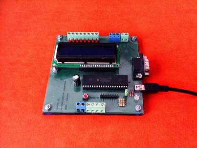
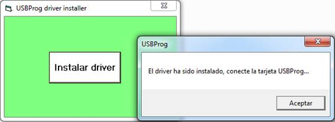
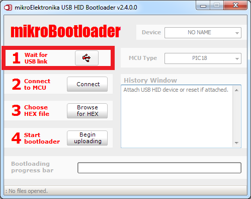
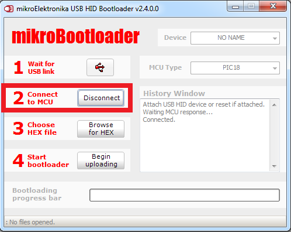
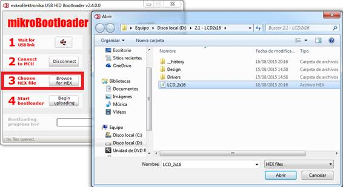
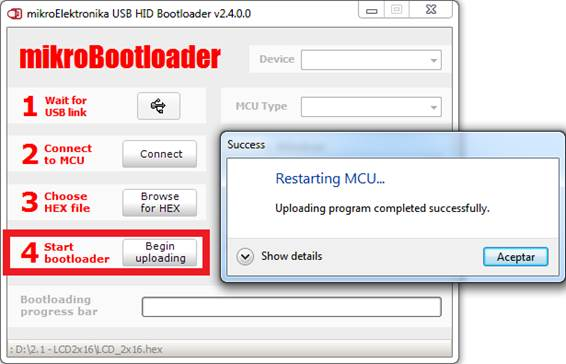

Descripción: Circuito entrenador en programación de microcontroladores PIC18F4550.
Incluye: Tarjeta con microcontrolador PIC 18F4550, regleta para conexión
de LCD alfanumérico 2x16, conector DB-9 para conexión RS-232, regleta para
conexión de teclado, borneras para conexión de entradas y salidas adicionales.
Descargas:
Compilador PIC C CCS (activador)
Instrucciones de instalación
Instrucciones para instalar el driver de la tarjeta:
1. Antes de conectar el cable USB al computador, ejecute el programa USBProg.exe y pulse el botón “Instalar driver”. (Si el sistema operativo es Windows 7 se recomienda hacer lo siguiente: Click derecho sobre USBProg.exe y seleccione ejecutar como administrador)
Instalador del driver USBProg.exe


2. Apague la conexión inalámbrica o cualquier medio que lo conecte a internet. (Esto evitará que el sistema operativo busque el driver en internet)
3. Conecte la tarjeta a un puerto USB de su computador.
4. Si el sistema operativo solicita la ubicación del driver, indique al programa instalador del driver su ubicación en la siguiente ruta: C:\Windows.
5. Al finalizar la instalación del driver puede cerrar la aplicación USBProg.exe.
Instrucciones para reprogramar la tarjeta:
1. Para poner la tarjeta en modo de programación debe conectarla a un puerto USB de su computador.
2. Ejecute la herramienta mikrobootloader USB HID.
3. Pulse simultáneamente los el botón RESET y el botón PROGRAM (botón rojo y botón negro, respectivamente).
Libere primero el botón RESET sin dejar de pulsar program, espere 2 segundos y libere el botón PROGRAM. La tarjeta ha pasado a modo de reprogramación.
Cuando el sistema operativo del PC reconozca el dispositivo el ícono USB se volverá de color rojo indicando que el enlace ha sido establecido. Tendrá 5 segundos para proceder con el siguiente paso, si espera más tiempo el dispositivo se reiniciará.

4. Haga Click en el botón Connect, el dispositivo entrará en modo Bootloader y estará preparado para recibir el nuevo programa.

5. Pulse el botón Browse for Hex para seleccionar el archivo .hex de su proyecto que generó el compilador.

6. Pulse el botón Begin uploading para enviar el programa al microcontrolador. El programa le informará cuando el proceso haya sido completado.

7. Si requiere reprogramar la tarjeta, solamente necesita repetir el proceso descrito.
Programas ejemplo:
Ir a tutorial de programación de microcontroladores con
CCS